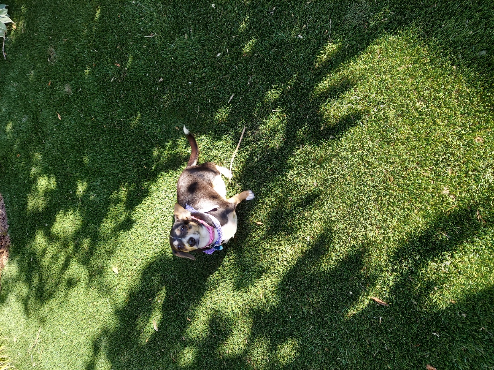

Esme is Amanda and Mats' dog
She loves long walks, but she is also a total couch potato
Esme is a mixed breed, part dachshund, part chihuahua. Amongst other nicknames, they are referred to as Chiweenie. As described on DogTime.com:

"These adorable pups make great apartment dogs for active urban dwellers. However, they are best suited to small or single-person households, and they tend to be yappy."